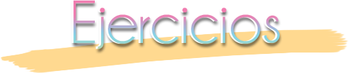
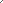
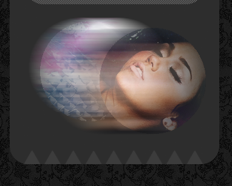
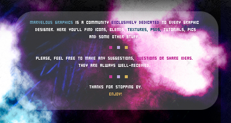

En esta sección se proponen algunos ejercicios para afianzar los conocimientos aprendidos en este tutorial.


 Scroll
Scroll
Ejercicio 1: Borde redondeado para el menú y título
Para el menú creado en el Paso 6, crear un borde redondeado que rodee los botones y añadir un título al menú.

Pistas y ayuda: Utilizar la herramienta "Rounded Rectangle Tool" y la siguiente textura:
Diseñar una imagen como la siguiente para colocar debajo del menú en la barra lateral:
Pistas y ayuda: Utilizar el header como imagen y la herramienta de pegado especial, que la encontraremos en Edit > Paste Especial > Paste Into. Se utilizan dos capas por cada "círculo" y la inferior de cada uno lleva un desenfoque de movimiento, que lo encontramos en Filter > Blur > Motion Blur.
En este ejercicio se propone el insertar en la imagen de header un cuadro de texto en el que se incluya una descripción de nuestra web, como el siguiente:
Pistas y ayuda: Utilizar alguna de las herramientas de forma geométrica jugando con la opacidad, y una letra de bitmap para el texto. Podemos encontrar fuentes truetype de este tipo en DAFONT. Añadir detalles como los cuadraditos de colores para separar párrafos.
Diseñar un nuevo header para la web, con las siguientes imágenes:
Pistas y ayuda:Jugar con la opacidad de las capas, la superposición, la duplicación, la desaturación y combinar las imágenes utilizando la segunda como textura.
Pistas y ayuda: Utilizar un "pincel" para crear la forma del botón y jugar con "Blending Options".
Pistas y ayuda: Utilizar la herramienta "Rounded Rectangle Tool" y la siguiente textura:

Ejercicio 2: Diseñar una imagen para decorar la barra lateral
Diseñar una imagen como la siguiente para colocar debajo del menú en la barra lateral:

Pistas y ayuda: Utilizar el header como imagen y la herramienta de pegado especial, que la encontraremos en Edit > Paste Especial > Paste Into. Se utilizan dos capas por cada "círculo" y la inferior de cada uno lleva un desenfoque de movimiento, que lo encontramos en Filter > Blur > Motion Blur.
Ejercicio 3: Añadir una descripción de la página en la imagen de Header
En este ejercicio se propone el insertar en la imagen de header un cuadro de texto en el que se incluya una descripción de nuestra web, como el siguiente:

Pistas y ayuda: Utilizar alguna de las herramientas de forma geométrica jugando con la opacidad, y una letra de bitmap para el texto. Podemos encontrar fuentes truetype de este tipo en DAFONT. Añadir detalles como los cuadraditos de colores para separar párrafos.
Ejercicio 4: Diseñar un nuevo header
Diseñar un nuevo header para la web, con las siguientes imágenes:
{kind=link}
{kind=link}
Pistas y ayuda:Jugar con la opacidad de las capas, la superposición, la duplicación, la desaturación y combinar las imágenes utilizando la segunda como textura.
Ejercicio 5: Crear un botón multicolor
Crear un botón redondo, como el de la imagen:
Pistas y ayuda: Utilizar un "pincel" para crear la forma del botón y jugar con "Blending Options".